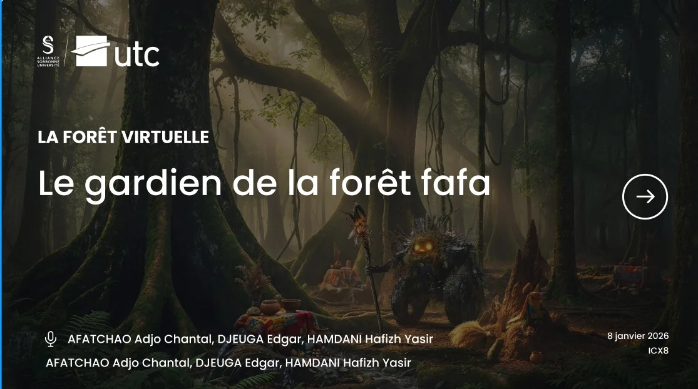
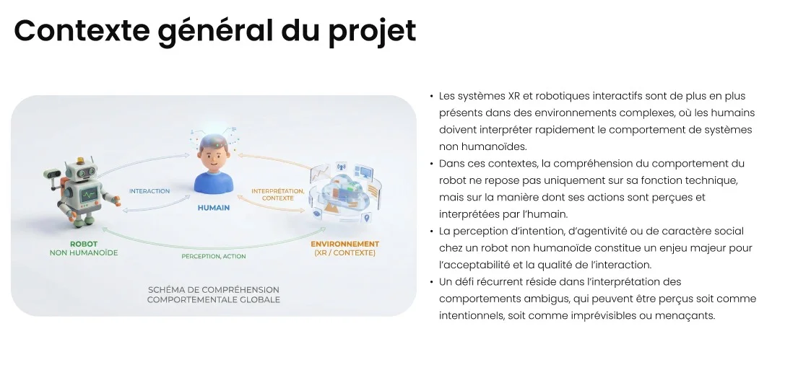
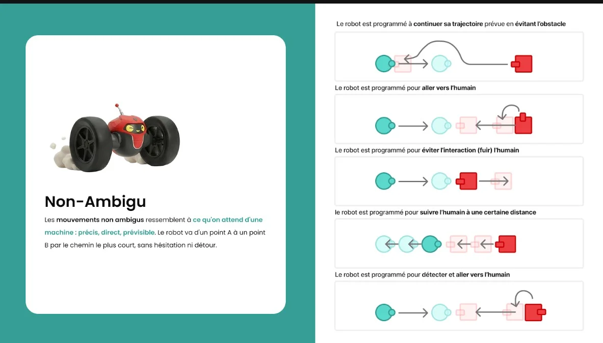
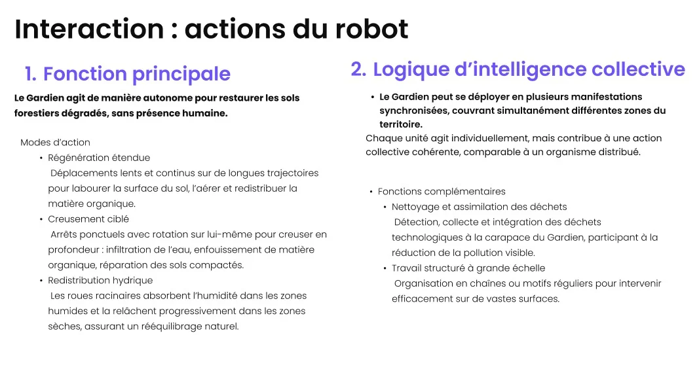
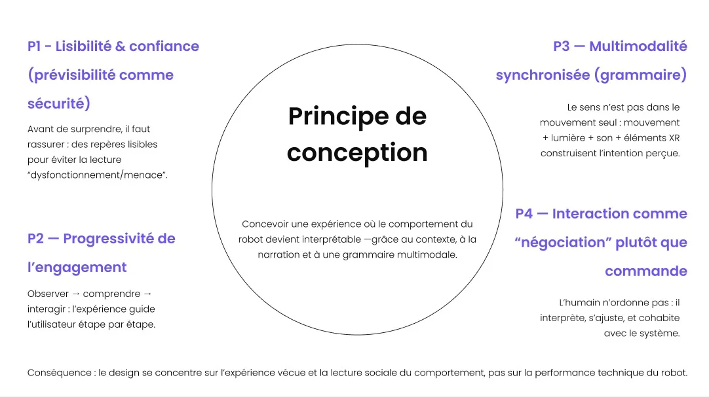

Étude de cas · Robotique sociale · Réalité mixte · ICX8, UTC Compiègne
Nkulu
Le gardien d'une forêt sacrée en 2035, né de déchets technologiques et de matière vivante.

Contexte
Les systèmes robotiques et XR s'installent dans des environnements complexes, où l'humain doit interpréter vite le comportement de machines non humanoïdes. Ce qu'il comprend d'un robot ne tient pas qu'à sa fonction technique, mais à la manière dont il perçoit ses gestes. Notre question de départ : l'ambiguïté d'un mouvement (hésitations, détours, irrégularités) rend-elle un robot plus vivant, plus proche, plus intentionnel ?

L'expérimentation
Avant de concevoir, nous avons mesuré. Des participants ont comparé des trajectoires de robot claires et ambiguës.
- Animacy
- Adaptation du questionnaire Godspeed.
- Émotion
- Valence mesurée avec l'échelle visuelle SAM.
- Analyse
- Statistiques sous JASP.

« Le mouvement seul ne suffit pas. »
— La leçon de l'expérimentation
Résultats et pivot
Aucun effet global sur l'Animacy : l'ambiguïté seule ne rend pas le robot plus vivant. Seul l'item « Prévisible / Imprévisible » ressort (p = .008), et l'imprévisibilité est liée à une émotion plus négative. Hors contexte, un geste hésitant se lit comme un bug ou une menace, pas comme une présence bienveillante.
Pour qu'un comportement ambigu devienne expressif, il doit s'inscrire dans une interaction réactive, multimodale et narrative.
Principes de conception
Rendre le comportement du robot lisible grâce au contexte, au récit et à une grammaire multimodale.
Avant de surprendre, rassurer : des repères lisibles pour éviter la lecture « dysfonctionnement ou menace ».
Observer, comprendre, puis interagir : l'expérience guide pas à pas.
Mouvement, lumière, son et éléments XR construisent ensemble l'intention perçue.
L'humain n'ordonne pas : il interprète, s'ajuste et cohabite avec le système.
Nkulu, le Gardien
Une forêt sacrée d'Afrique de l'Ouest, en 2035. Face aux ravages technologiques, un esprit protecteur fusionne déchets électroniques et matière vivante : Nkulu. Une silhouette basse, ancrée au sol, faite de fragments mécaniques envahis par les mousses et les lichens.

Une entité distribuée
Le Gardien se déploie en plusieurs manifestations pour régénérer la forêt : labour de surface, creusement ciblé, redistribution de l'eau, collecte des déchets technologiques.

Une grammaire d'interaction
Aucun contrôle direct : l'humain interagit par des rituels, comme un claquement de mains, et le robot répond par des régulations graduées (mise à distance, barrières circulaires, postures dissuasives).
La réalité mixte
Des répliques virtuelles du robot se superposent à l'espace réel pour matérialiser un travail collectif à grande échelle et donner vie à des figures expressives, comme le comportement « en serpent ».
Ce que j'en retiens
Un résultat « négatif » peut fonder un design : c'est parce que l'ambiguïté seule échouait que Nkulu a un récit.